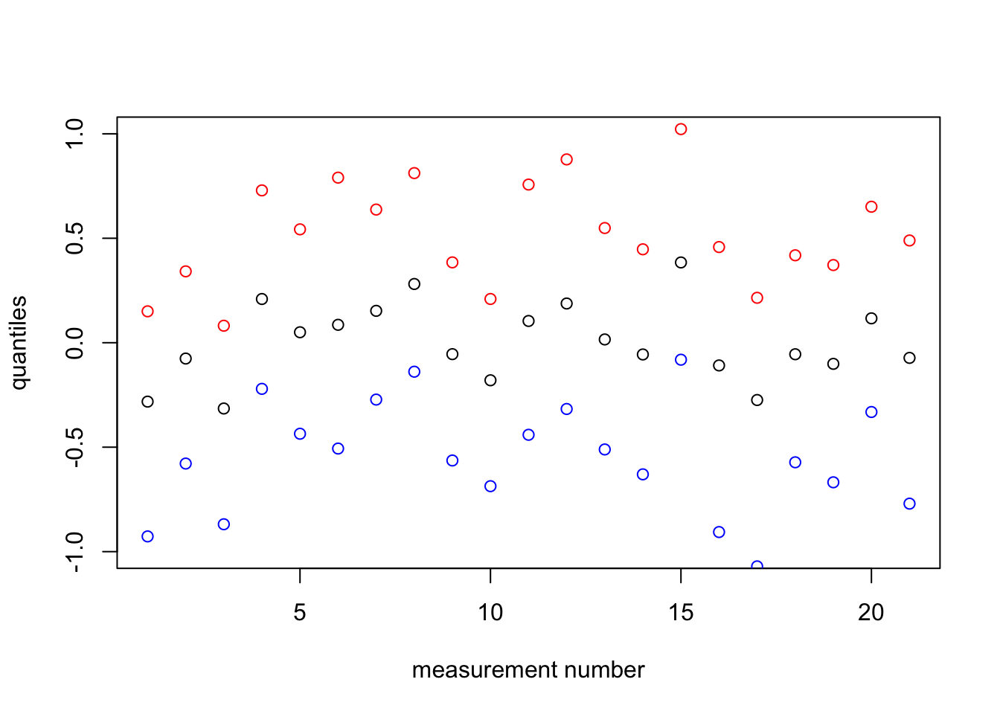
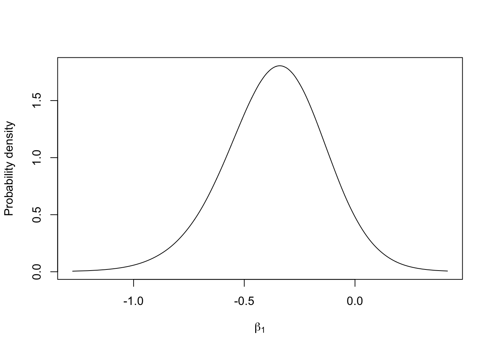
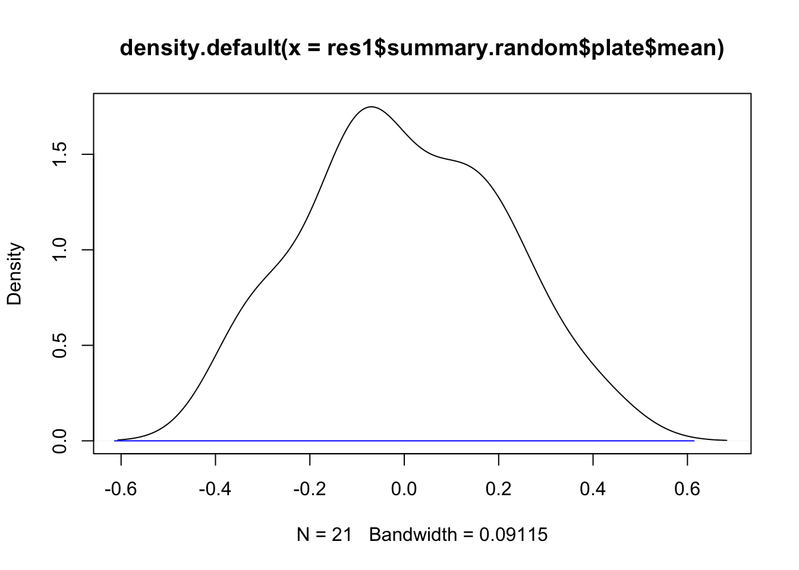

This is a detailed example of a good model for a simple dataset called Seeds. The goal is to show an example of INLA with a simple model, using both fixed effects and random effects. For an overview of the words and concepts see the word-list. (The name BTopic102 is a unique identifier for the weppage.)
We load any packages and set global options. You may need to install these libraries (Installation and general troubleshooting).
library(INLA)data(Seeds)This Seeds is the original dataframe. We will keep Seeds unchanged, and create another object (df, our modeling dataframe) later. Next we explain the data.
# Run: ?Seeds
head(Seeds)## r n x1 x2 plate
## 1 10 39 0 0 1
## 2 23 62 0 0 2
## 3 23 81 0 0 3
## 4 26 51 0 0 4
## 5 17 39 0 0 5
## 6 5 6 0 1 6# - r is the number of seed germinated (successes)
# - n is the number of seeds attempted (trials)
# - x1 is the type of seed
# - x2 is the type of root extract
# - plate is the numbering of the plates/experimentsAll the covariates are 0/1 factors, and the numbering of the plates are arbitrary. We do not re-scale any covariates. The observations are integers, so we do not re-scale these either.
df = data.frame(y = Seeds$r, Ntrials = Seeds$n, Seeds[, 3:5])I always name the dataframe that is going to be used in the inference to df, keeping the original dataframe. The observations are always named \(y\).
summary(df)## y Ntrials x1 x2 plate
## Min. : 0 Min. : 4 Min. :0.00 Min. :0.00 Min. : 1
## 1st Qu.: 8 1st Qu.:16 1st Qu.:0.00 1st Qu.:0.00 1st Qu.: 6
## Median :17 Median :39 Median :0.00 Median :1.00 Median :11
## Mean :20 Mean :40 Mean :0.48 Mean :0.52 Mean :11
## 3rd Qu.:26 3rd Qu.:51 3rd Qu.:1.00 3rd Qu.:1.00 3rd Qu.:16
## Max. :55 Max. :81 Max. :1.00 Max. :1.00 Max. :21table(df$x1)##
## 0 1
## 11 10table(df$x2)##
## 0 1
## 10 11This shows that no other covariates or factors are out of scale, or senseless. We note that there are several observations of each factor level.
Next we look at counfounding and outliers.
plot(df)We see no problematic structure, or outliers. The relationship between x1 and plate is not a problem (since plate values will be treated as an arbitrary enumeration in our model).
family1 = "binomial"
control.family1 = list(control.link=list(model="logit"))
# number of trials is df$NtrialsThis specifies which likelihood we are going to use for the observations. The binomial distribution is defined with a certain number of trials, in INLA known as Ntrials. If there were hyper-parameters in our likelihood, we would specify the priors on these in control.family.
The precise mathematical description of our likelihood is, \[y_i \sim \text{Binom}(N_i, p_i) \] with \[\eta_i = \text{logit}(p_i). \] We call \(\eta_i\) (“eta i”) the predictor (or: linear predictor, latent variable, hidden state, …). This \(\eta_i\) is a parameter where we believe a linear model to be somewhat sensible. (A linear model is completely senseless on \(p_i\).)
hyper1 = list(theta = list(prior="pc.prec", param=c(1,0.01)))
formula1 = y ~ x1 + x2 + f(plate, model="iid", hyper=hyper1)This specifies the formula, and the priors for any hyper-parameters in the random effects. See inla.doc("pc.prec") for more details on this prior.
The precise mathematical description of the model for our predictor \(\eta_i\) is \[\eta_i = \beta_0 + \beta_1 x_1 + \beta_2 x_2 + v_i, \] where \[\beta_i \sim \mathcal N(0, 1000), \] \[v_i \sim \mathcal N(0, \sigma_v^2). \]
This is not yet a Bayesian model, since we have not defined the prior distribution (“simulating distribution”) for all parameters. We assume an exponential prior on \(v_i\), i.e. \[\pi(\sigma_v) = \lambda e^{-\lambda \sigma_v}. \] This is not yet a Bayesian model, as we have not defined a prior for \(\lambda\). We fix \(\lambda\) so that \[\pi(\sigma_v > 1) = 0.01, \] which means that \(\lambda = \frac{-log(0.01)}{1} \approx 4.6\).
Now we have a fully specified Bayesian model. After this, everything else is “just computations”, and then interpreting the results.
Next we run the inla-call, where we collect the variables we have defined.
res1 = inla(formula=formula1, data=df,
family=family1, Ntrials=Ntrials,
control.family=control.family1)The Ntrials picks up the correct column in the dataframe.
summary(res1)##
## Call:
## c("inla(formula = formula1, family = family1, data = df,
## Ntrials = Ntrials, ", " control.family = control.family1)")
## Time used:
## Pre = 1.44, Running = 0.177, Post = 0.0735, Total = 1.69
## Fixed effects:
## mean sd 0.025quant 0.5quant 0.97quant mode kld
## (Intercept) -0.39 0.18 -0.73 -0.39 -0.044 -0.40 0
## x1 -0.35 0.23 -0.82 -0.35 0.055 -0.33 0
## x2 1.03 0.22 0.60 1.03 1.442 1.04 0
##
## Random effects:
## Name Model
## plate IID model
##
## Model hyperparameters:
## mean sd 0.025quant 0.5quant 0.97quant mode
## Precision for plate 111.06 1231.28 2.98 10.91 225.97 6.06
##
## Expected number of effective parameters(stdev): 9.91(2.94)
## Number of equivalent replicates : 2.12
##
## Marginal log-Likelihood: -68.44This summary shows many elements of the results, notably not including the random effects (the parameters are not shown). The total result, however, is a complex high-dimensional posterior.
# Run: str(res1, 1)This command, if run, shows one step in the list-of-lists hierarchy that is the inla result.
res1$summary.random$plate## ID mean sd 0.025quant 0.5quant 0.97quant mode kld
## 1 1 -0.287 0.27 -0.896 -0.258 0.152 -0.1864 1.1e-04
## 2 2 -0.080 0.23 -0.559 -0.068 0.333 -0.0299 4.8e-05
## 3 3 -0.316 0.24 -0.844 -0.296 0.082 -0.2570 2.2e-04
## 4 4 0.217 0.24 -0.214 0.198 0.708 0.1452 1.0e-04
## 5 5 0.055 0.24 -0.421 0.049 0.526 0.0227 6.1e-05
## 6 6 0.098 0.31 -0.490 0.074 0.750 0.0198 4.0e-05
## 7 7 0.157 0.23 -0.264 0.142 0.618 0.0846 5.9e-05
## 8 8 0.284 0.24 -0.136 0.264 0.788 0.2192 1.6e-04
## 9 9 -0.061 0.23 -0.547 -0.052 0.372 -0.0232 6.0e-05
## 10 10 -0.187 0.22 -0.667 -0.171 0.203 -0.1210 9.5e-05
## 11 11 0.115 0.29 -0.428 0.090 0.721 0.0290 4.6e-05
## 12 12 0.206 0.30 -0.312 0.172 0.845 0.0614 7.1e-05
## 13 13 0.021 0.26 -0.494 0.016 0.529 0.0043 5.5e-05
## 14 14 -0.059 0.26 -0.608 -0.049 0.432 -0.0196 5.2e-05
## 15 15 0.387 0.29 -0.086 0.360 0.991 0.3051 2.9e-04
## 16 16 -0.126 0.33 -0.861 -0.094 0.443 -0.0261 3.1e-05
## 17 17 -0.291 0.32 -1.028 -0.248 0.215 -0.1026 6.9e-05
## 18 18 -0.060 0.24 -0.556 -0.054 0.402 -0.0270 6.0e-05
## 19 19 -0.110 0.25 -0.648 -0.096 0.358 -0.0421 6.6e-05
## 20 20 0.125 0.24 -0.325 0.105 0.627 0.0433 4.6e-05
## 21 21 -0.085 0.30 -0.739 -0.066 0.470 -0.0197 5.4e-05plot(1:nrow(df), res1$summary.random$plate$`0.97`, col="red", ylim=c(-1,1),
xlab="measurement number", ylab = "quantiles")
points(1:nrow(df), res1$summary.random$plate$`0.5quant`)
points(1:nrow(df), res1$summary.random$plate$`0.02`, col="blue")
The reason we use points instead of lines is that the numbering of the plates / experiments is arbitrary. Lines would falsely imply that one observation came “before/after” another (in time or on some other covariate).
m.beta1 = inla.tmarginal(fun = function(x) x, marginal =
res1$marginals.fixed$x1)
# - this transformation is the identity (does nothing)
# - m.beta1 is the marginal for the coefficient in front of the x1 covariate
plot(m.beta1, type="l", xlab = expression(beta[1]), ylab = "Probability density")
We must transform the marginal (res1$marginals.hyperpar$"Precision for plate") to a parametrisation that makes sense to use for interpretation. The only parametrisation I like is \(\sigma\), marginal standard deviation. For numerical reasons, we need to transform the internal marginals. To find define the function used in the transformation, we look up the internal parametrisation, which is \(\log(precision)\), see inla.doc("iid").
m.sigma = inla.tmarginal(fun = function(x) exp(-1/2*x), marginal =
res1$internal.marginals.hyperpar$`Log precision for plate`)
# - m.sigma is the marginal for the standard deviation parameter in the iid random effect
plot(m.sigma, type="l", xlab = expression(sigma[iid]), ylab = "Probability density")m.plate.7 = inla.tmarginal(fun = function(x) x, marginal =
res1$marginals.random$plate$index.7)
# - m.plate.7 is one of the marginals for the parameters beloning to the plate iid effect
# - it is number 7, which corresponds to plate=7, which is our 7th row of data
plot(m.plate.7, type="l", xlab = "marginal plate nr 7", ylab = "Probability density")Here we take the point estimates of the iid effect (posterior marginal medians).
plot(density(res1$summary.random$plate$mean))
lines(0+c(-2, 2)*res1$summary.hyperpar$`0.5quant`^(-0.5) , c(0,0), col="blue")
# - draw a blue line for plus/minus 2 sigmaFrom this plot we see that the estimates of the random effect give a nice distribution, ending up within two standard deviations from zero. The assumption that the random effect is iid Gaussian looks reasonable.
What if we want to predict? On the same plate? On a new plate? With new covariate values? Here we provide one example.
df2 = rbind(df, c(NA, 1, 0, 0, 22))
tail(df2)## y Ntrials x1 x2 plate
## 17 3 12 1 1 17
## 18 22 41 1 1 18
## 19 15 30 1 1 19
## 20 32 51 1 1 20
## 21 3 7 1 1 21
## 22 NA 1 0 0 22res.pred = inla(formula=formula1, data=df2,
family=family1, Ntrials=Ntrials,
control.predictor = list(compute=T, link = 1),
# - to get the posterior of the predictor and fitted values
control.family=control.family1)res.pred$summary.fitted.values[22, ]## mean sd 0.025quant 0.5quant 0.97quant mode
## fitted.Predictor.22 0.41 0.088 0.24 0.4 0.59 0.4# - this is the inv.logit(eta_i), namely p_iAn alternative to using the logit link would be to use the probit link. Changing the likelihood in this way also changes the behaviour of the linear predictor.
control.family2 = list(control.link=list(model="probit"))
res1 = inla(formula=formula1, data=df,
family=family1, Ntrials=Ntrials,
control.predictor = list(compute=T, link=1),
# - to get the posterior of the predictor and fitted values
control.family=control.family1)
res2 = inla(formula=formula1, data=df,
family=family1, Ntrials=Ntrials,
control.predictor = list(compute=T, link=1),
# - to get the posterior of the predictor and fitted values
control.family=control.family2)a = data.frame(y=df$y, ps=df$y/df$Ntrials,
r1eta = res1$summary.linear.predictor$mean,
r2eta = res2$summary.linear.predictor$mean,
r1fit = res1$summary.fitted.values$mean,
r2fit = res2$summary.fitted.values$mean)
round(a, 2)## y ps r1eta r2eta r1fit r2fit
## 1 10 0.26 -0.67 -0.43 0.34 0.33
## 2 23 0.37 -0.47 -0.29 0.39 0.39
## 3 23 0.28 -0.70 -0.45 0.33 0.33
## 4 26 0.51 -0.17 -0.09 0.46 0.46
## 5 17 0.44 -0.33 -0.20 0.42 0.42
## 6 5 0.83 0.74 0.47 0.67 0.68
## 7 53 0.72 0.80 0.50 0.69 0.69
## 8 55 0.76 0.92 0.59 0.71 0.72
## 9 32 0.63 0.58 0.36 0.64 0.64
## 10 46 0.58 0.46 0.28 0.61 0.61
## 11 10 0.77 0.76 0.48 0.68 0.68
## 12 8 0.50 -0.53 -0.32 0.37 0.38
## 13 10 0.33 -0.72 -0.45 0.33 0.33
## 14 8 0.29 -0.80 -0.50 0.31 0.31
## 15 23 0.51 -0.35 -0.20 0.41 0.42
## 16 0 0.00 -0.87 -0.55 0.30 0.30
## 17 3 0.25 0.00 -0.03 0.50 0.49
## 18 22 0.54 0.23 0.14 0.56 0.55
## 19 15 0.50 0.18 0.10 0.54 0.54
## 20 32 0.63 0.41 0.26 0.60 0.60
## 21 3 0.43 0.20 0.12 0.55 0.55Rue, Håvard, Andrea Riebler, Sigrunn H Sørbye, Janine B Illian, Daniel P Simpson, and Finn K Lindgren. 2016. “Bayesian Computing with Inla: A Review.” arXiv Preprint arXiv:1604.00860.
Comments
See also
Read the review paper (see Rue et al. 2016), and see the references therein! Also, explore www.r-inla.org, both the resources and the discussion group. And, use the function
inla.docinRto find information related to a keyword (e.g. a likelihood).More details on
dfin generalThis dataframe contains only numerical values, and all factors have been expanded. All covariates have a mean near zero and a standard deviation near 1 (i.e. 0.1<sd<10). They are also transformed to the appropriate scale, often with a
log.Mean, median or mode?
What point estimate should you use? Mean, median or mode?
The mode, is usually the wrong answer. This is where the posterior is maximised, which would be similar to a penalised maximum likelihood. But, it is generally understood that the median and mean are better, both as they have nicer statistical properties, a more “valid” loss function, and experience shows that they are more stable and less error prone.
Choosing between the median and mean is more difficult. In most cases, the difference is very small, especially for “good” parametrisations. I personally prefer the median (0.5 quantile), for several reasons
You can transform (between parametrisations) “directly” (eg using
^(-0.5)as in the code),Estimates are independent of the internal choice of parameters (in the computer code).
I prefer the interpretation of the absolute loss function to that of a quadratic loss function for hyper-parameters.